Contents
0. 摘要
含自旋轨道耦合的电子-缺陷谱函数 $A(k,\omega)$:MoS$_2$ 单层,O$_\mathrm{S}$ / Se$_\mathrm{S}$ / V$_\mathrm{S}$(弛豫几何)三缺陷,12×12 粗网格 × 22 旋量带链 (带 13–34)+ 22 轨道 Wannier 顶点帧(同一 wannier 化,无 disentanglement), $n_d = 10^{12}\,\mathrm{cm^{-2}}$、$\eta=5$ meV、KZOOM 路径($K-0.3\,\overline{\Gamma K} \to K+0.45\,\overline{KM}$,721 点)、$N_f=1200$。CBM 窗呈现传导带 SOC 双线 (K 点劈裂 3.0 meV,沿 $K\to M$ 张开);VBM 窗呈现 149 meV 的 K 点价带自旋劈裂与 其间的缺陷平带多重态;全路径窗中 V$_\mathrm{S}$ 的深间隙 S-p 双重态(+1.12/+1.17) 横贯显形。谱函数由快速路线(顶点因子化 + 宿主 $G_0$ 谱分箱,kpath_fast.py)产出: 9 窗全套 ~30 分钟,门内验证因子化精确(1e-15)、分箱中隙 3e-5 / 带边 7e-4。
1. 图
全路径总览($\Gamma$–M–K–$\Gamma$,全能窗;2026-08-12,22 轨道 Wannier 框架 [带 13–34,无 disentanglement])。V$_\mathrm{S}$ 面板中 +1.12/+1.17 eV 的深间隙 S-p 双重态横贯全路径显形(与 §4b 的稀释 DOS 能级一致;$T(\omega)$ 在两能级处 $\max|T|$ 增强 ×200),而 O$_\mathrm{S}$/Se$_\mathrm{S}$ 间隙干净——三缺陷对照即 物理判据。色标下限 0.03:$n_d=8.8\times10^{-4}$/cell 的孤立缺陷平带谱权重本就小 ($\max_k A \approx 0.2$),这是稀释极限的诚实亮度:
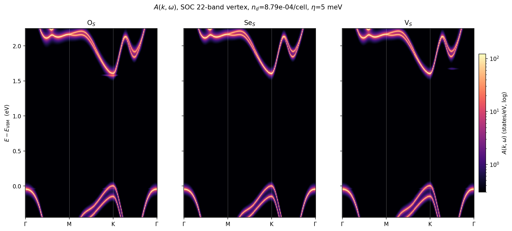
工序注记:此前 10 轨道版缺失该双重态有两个独立原因——Mo-d 子空间不可表示性, 以及 chk→u.mat 转换器写出了等效转置的 $U$(酉性检验对此免疫)。后者由 wannier 化恒等式 $U^\dagger\,\mathrm{diag}(\varepsilon_k)\,U = H_W(k)$ 判定并修复 (正确取向 1.5e-5,错误取向 O(4 eV);工具已入 qe-edt
post/chk2umat.py)。
三缺陷 22 带 K 谷 zoom(144k 链 + 22 轨道帧,同一 wannier 化):
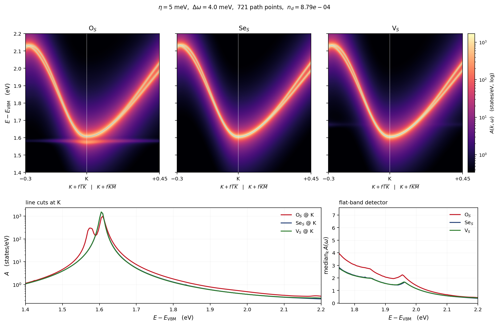
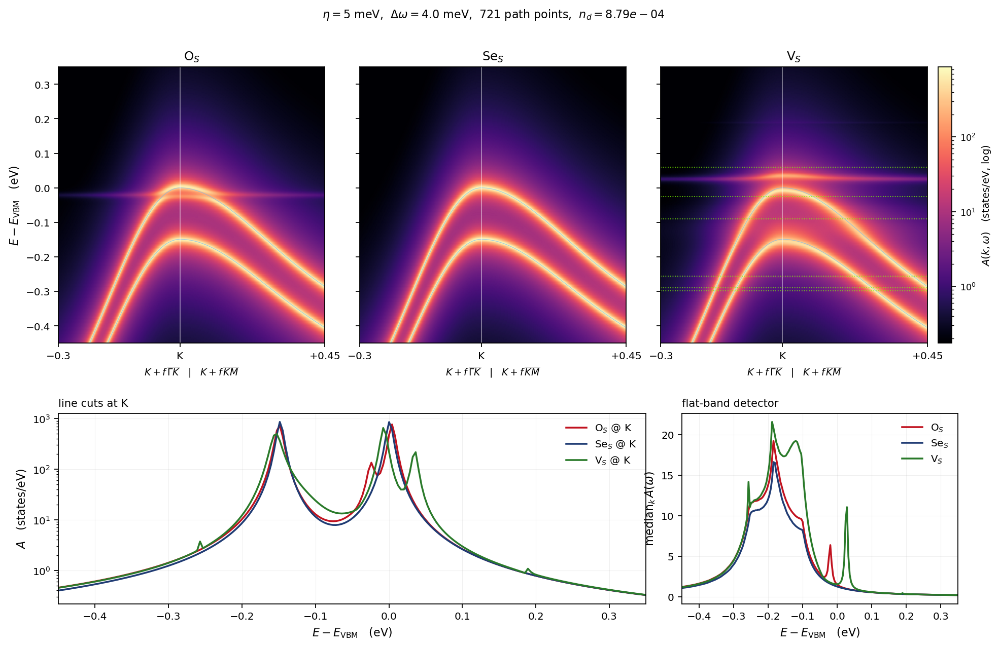
自能色图($\Sigma^{ed}(k,\omega)=n_d\,T(k,k;\omega)$,同 KZOOM 路径与能窗; 上行 Re Tr $\Sigma$(发散色标),下行 $-$Im Tr $\Sigma$(对数)):
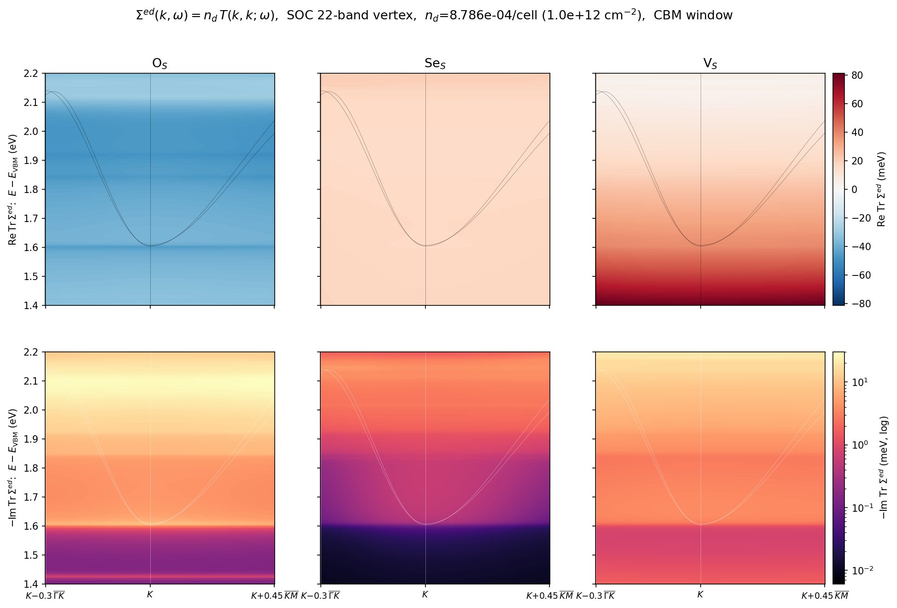
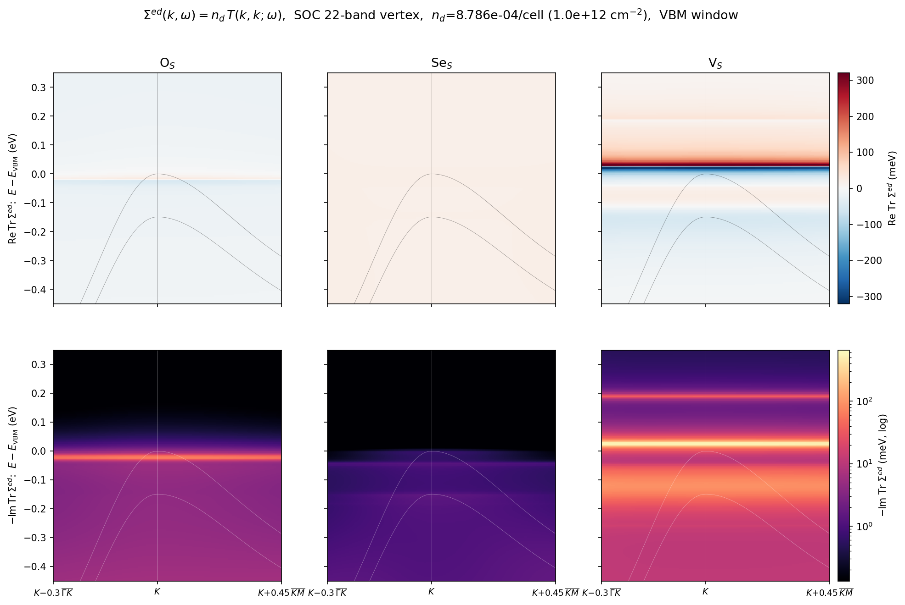
读图:$T(k,k)$ 沿路径近乎平直——点缺陷短程势的特征;VBM 窗中 V$_\mathrm{S}$ 的 +0.03 浅隙态呈教科书式共振($-$Im 亮线、Re 过零翻号,$\pm$300 meV 色散瓣), Se$_\mathrm{S}$ 几乎无特征(等价电子);CBM 窗中 O$_\mathrm{S}$ 的 Re$\,\Sigma<0$ 是其下方 +1.545 共振的能级吸引,V$_\mathrm{S}$ 的 Re$\,\Sigma>0$ 向隙内增强 是深双重态(+1.12/+1.17)从下方的推斥;$-$Im 在带边同步开启(散射相空间)。
同图 $n_d = 10^{13}$ cm$^{-2}$ 版($\Sigma = n_d T$ 严格线性,$T$ 缓存复用—— 色标整体 ×10:V$_\mathrm{S}$ 共振核心 Re$\,\Sigma$ 达 ±3.8 eV,$-$Im 超 1 eV。 注意:此浓度下单点缺陷 T-矩阵(独立散射体假设)开始吃紧——共振附近的谱重整已非 微扰,缺陷间干涉/ATA 修正在此量级进入;$10^{12}$ 版是定量可靠区):
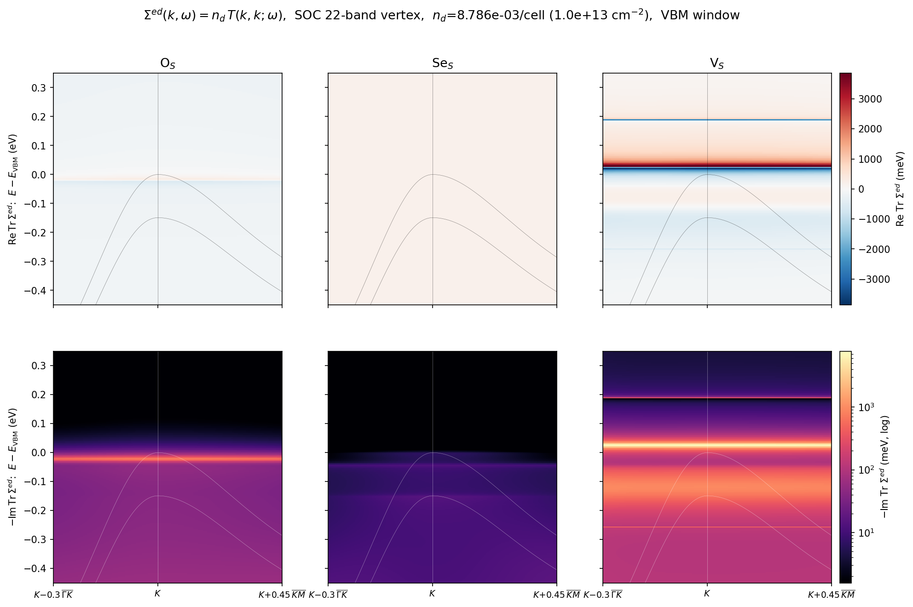
浓度系列:$n_d = 3\times10^{13}$ cm$^{-2}$(2.64%/胞)——杂质带区。 谱函数已强烈重构:CBM 窗中 O$_\mathrm{S}$ 把 CB 底下拉并劈裂(其 +1.545 共振 成杂质带),V$_\mathrm{S}$ 把 CB 底上推 ~50 meV——方向恰为 $10^{12}$ 版 Re$\,\Sigma$ 符号的放大兑现;VBM 窗中 V$_\mathrm{S}$ 价带顶与缺陷能级反交叉、 边缘上推 ~0.13 eV,O$_\mathrm{S}$ +0.05,Se$_\mathrm{S}$ 整体微移仍带状。 注意:此浓度下 $n_d T$ 独立散射体近似只作定性参考(缺陷间干涉/多重散射未含):
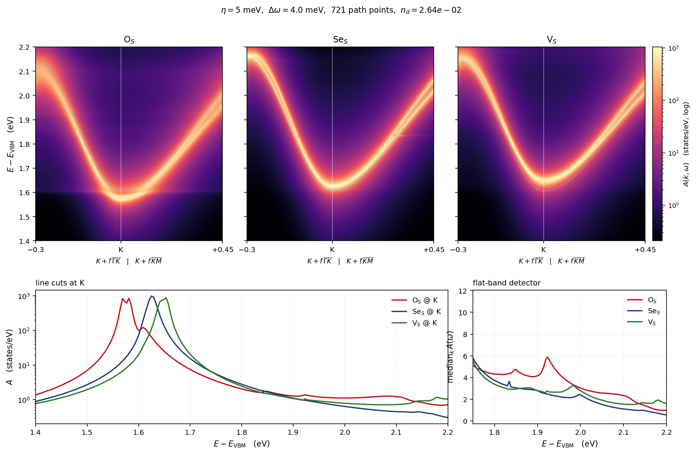
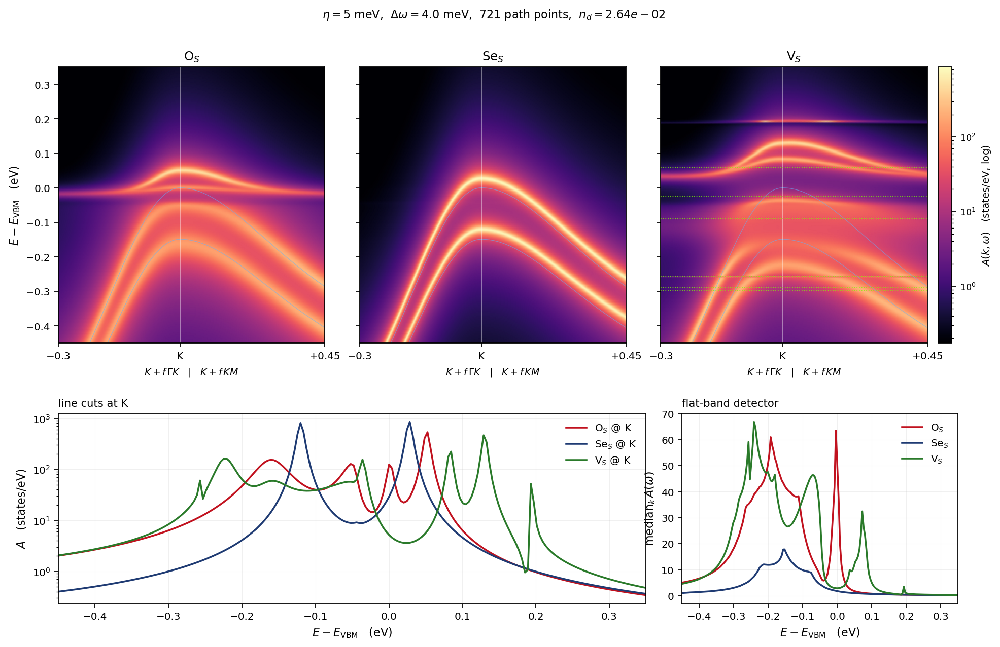
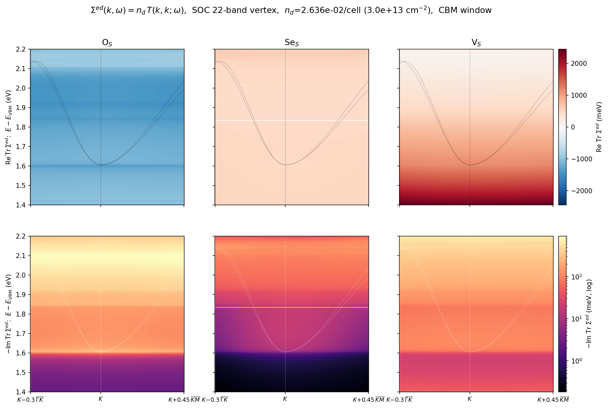
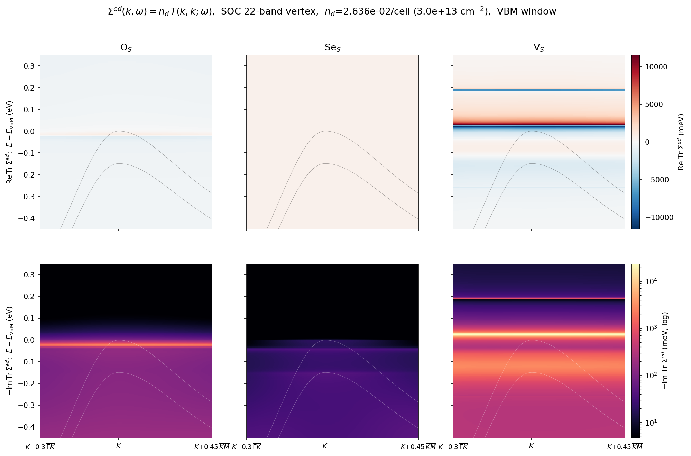
首批 10 带版(O$_\mathrm{S}$+V$_\mathrm{S}$)存档:


VBM 图中 V$_\mathrm{S}$ 面板的绿色虚线为标量(非 SOC)超胞真值能级,直接对照 SOC 对间隙缺陷能级的重排与劈裂。
2. 平带探测器读数(局域缺陷特征,$E-E_\mathrm{VBM}$/eV)
| 窗口 | O$_\mathrm{S}$ | V$_\mathrm{S}$ |
|---|---|---|
| CBM | +1.694 | +1.702, +1.758(双特征,间距 ~56 meV) |
| VBM | −0.253, −0.241, −0.217, −0.181, −0.116, −0.060, −0.020, +0.004 | −0.329, −0.297, −0.253, −0.241, −0.213, −0.181, −0.132, −0.060, −0.012, +0.053, +0.181(深入间隙) |
标量 V$_\mathrm{S}$ 的六个真值能级(−0.298…+0.060)与 SOC 多重态同域——SOC 把每个 轨道能级按总角动量结构劈裂/重排,V$_\mathrm{S}$ 间隙侧新增 +0.181 eV 平带。
3. 计算路径(本批)
- born $M_{AA}$:EDI-direct v8d(带轴转置修复后,与 EDT 跨码闭环 1e-14 认证), 144×144 k 对全 40 带,5m36s;
- MODE C 链:EDT r11(A2A 分批转置手术,6×6 逐位回归)/Anvil highmem 单节点 16 pool×3 线程,n_reorth=1(0.000000 meV 判决)、col_chunk=1,~45 min/步 × 16 步; 链启动 unit test = 每次生产的跨码闭环(O$_\mathrm{S}$ 2.730e-11、V$_\mathrm{S}$ 2.547e-11);
- 10 旋量带 Wannier:soc40 宿主带 25–34 为全局隔离群(与 24/35 带净隙 6.5 meV/0.56 eV), 无需 disentanglement;w90 3.1 写盘崩溃经 chk 直提 + restart=plot 恢复(u.mat 幺正 1.9e-10);
- T 缓存:Koster–Slater 簇(RCUT=4,61 胞,dim 610),10 带下每窗仅 ~5 分钟 (11 带标量生产为 2–3.5h)——Banff 4 节点四窗并行完成;
- 宿主:100 Ry(60 Ry 复核:劈裂 ≤0.03 meV 但绝对能级 7.32 meV 超 5 meV 门)。
4. 超胞真值闸门:陪集 DOS 对账(已完成)
陪集分解使 6×6-陪集的下折叠问题严格等价于周期缺陷阵列 = SOC 超胞。用 socsup 的 超胞本征值(各 1040 条,O$_\mathrm{S}$ VBM=第 936 态、V$_\mathrm{S}$ 第 930 态) 直接对账:
三方总览(黑=真值,蓝=10 带,红=22 带;V$_\mathrm{S}$ 内嵌图为间隙 zoom—— 10 带的杂散峰与错位双重态 vs 22 带的干净贴合一图定案):
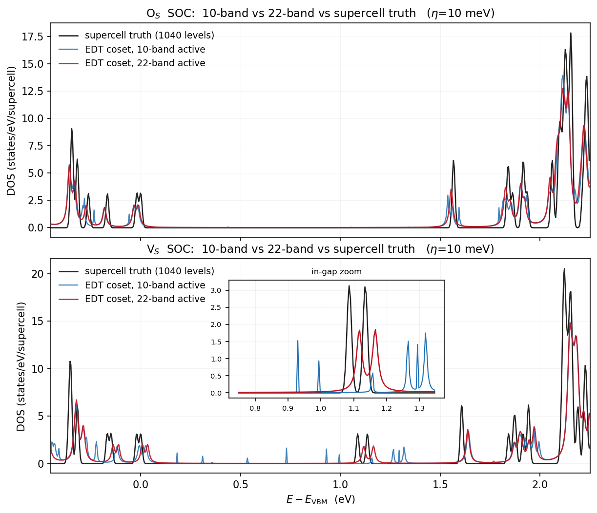


流形宽度仲裁(同一宿主、同一 edmat,唯一变量 = active 窗口):
| V$_\mathrm{S}$ 深间隙双重态 | 10 带 | 22 带 | 超胞真值 |
|---|---|---|---|
| 位置 (eV) | ~0.93/1.0(偏 ~150 meV) | +1.118/+1.166 | 1.086/~1.15 |
| 间隙杂散峰 | 0.18–0.73 一串假峰 | 无 | 无 |
| O$_\mathrm{S}$ CB 起点 | +1.538(差 28 meV) | +1.554(差 12 meV) | +1.566 |
结论与分工:V$_\mathrm{S}$ 空位深态带强 S-p 特征,Mo-d 主导的 10 带流形张不开它 (非 SOC 时"5 带败给 11 带"的教训在 SOC 重演)。10 带适用于带边 K 谷 zoom (本页 §1 图定性可靠、快 30×);深间隙/真值级定量必须 22 带。22 带残差 ~20–40 meV 源于 N$_S$=16 链截断,可按需加深。
4b. 22 带 144k 稀释极限(三缺陷,新)
12×12(144 k)× 22 旋量带链(SVD 压缩 svd_tol=1e-4,秩 1032/1032/1080, Banff 4 节点 4.6–4.7 h/链)给出 $n_d=1/144$ 的稀释极限 DOS,与超胞真值、 6×6 阵列三方对照(η=10 meV):
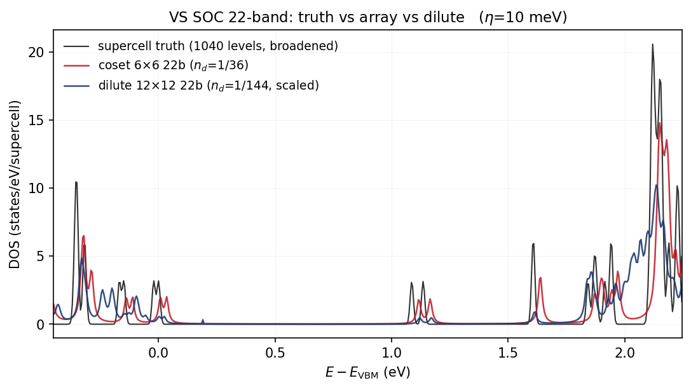
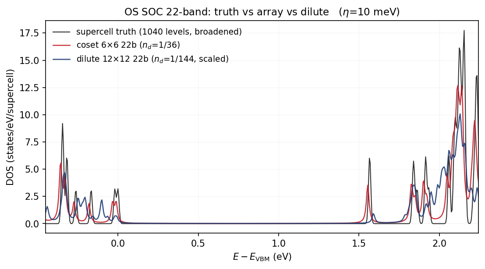
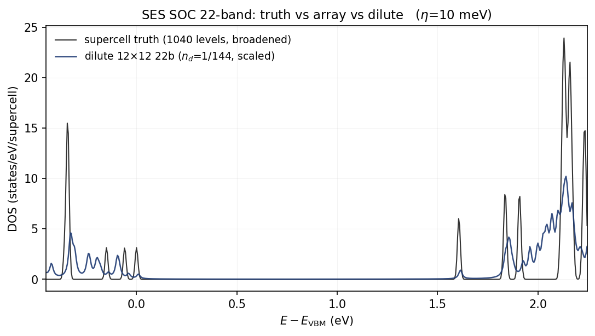
| 观测量 | 真值(阵列 1/36) | 陪集 6×6 22b | 稀释 144k 22b |
|---|---|---|---|
| V$_\mathrm{S}$ 深间隙双重态 (eV) | +1.085 / +1.135 | +1.115 / +1.165 | +1.120 / +1.170 |
| O$_\mathrm{S}$ CB 共振 (eV) | +1.545 | +1.545 | +1.545 |
| Se$_\mathrm{S}$ 间隙 | 干净 | — | 干净(首个下折叠 DOS) |
结论:(i) V$_\mathrm{S}$ 深态的稀释位移 ≤5 meV——深间隙能级在 1/36 浓度 已达孤立缺陷极限(缺陷间耦合可忽略);阵列-vs-真值的 ~30 meV 残差来自 $N_S=16$ 链截断,与浓度无关。(ii) O$_\mathrm{S}$ 的 CB 共振三线重合,浓度 无关性干净利落。(iii) 稀释谱独有 V$_\mathrm{S}$ +0.19 eV 浅间隙特征 (10 带时代 +0.181 观察的 22 带确认)。链 host-VBM(−5.8859 eV)与谱函数 管线的 GATE_VBM 逐位互证。
5. 待办
- ~~Se$_\mathrm{S}$ SOC 链 + 真值对账 + 三缺陷 zoom~~(全部完成:§1 22 带三缺陷版、§4b DOS);
- ~~带边 zoom 的 22 带复核~~(完成:§1 的 22 带版即是;V$_\mathrm{S}$ CB 平带 10 带 +1.694/+1.758 → 22 带 +1.698 单特征,Se$_\mathrm{S}$ CB 洁净、V$_\mathrm{S}$ VBM 侧 −0.213/−0.181/−0.036 与 +0.185 间隙尖峰(与 §4b 稀释 DOS +0.19 互证));
- 10 带留一法插值误差(Wannier 质量关)。